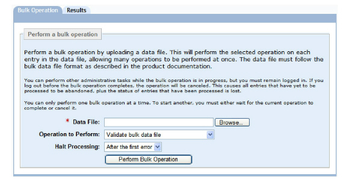

|
IdentityGuard Server 11.0 Administration Guide |
|
IdentityGuard Server 11.0 Administration Guide |
Bulk files imported through the Bulk Operations page of the Administration interface can create, change or delete contact information for multiple users in one operation.
For more information about bulk operations see Performing bulk operations.
To administer contact information for multiple users with bulk operations
1. Create a bulk file (see Creating and editing bulk files).
2. Log in to the Administration interface (see Logging in and out of the Administration interface).
3. In the main menu, click Bulk Operations.
The Bulk Operations page appears.

4. Click the Bulk Operation tab.
5. Click the Browse button to locate the bulk file.
6. Select a bulk operation from the Operation to Perform drop-down list.
● To create contact information in bulk, select Create contact information for users.
● To modify contact information in bulk, select Modify user contact information.
● To delete contact information in bulk, select Delete user contact information.
7. From the Halt Processing drop-down list, select the number of errors to allow before processing stops due to too many errors. (See To create users in bulk for an explanation of Halt Processing options.)
8. Click Perform Bulk Operation.
If you select Delete user contact information, a dialog box prompts you to confirm the deletion. Click OK.
The Bulk Operation in Progress pane appears. The size of your bulk operation directly affects the time the operation takes to process. This page indicates the initial status of the operation.
9. Optional. To view the current status of the bulk operation, click Update Results. (The Results page is also updated automatically every 10 seconds.)
When Entrust IdentityGuard completes the bulk operation, the Results page appears.
10. Click Done to return to the Bulk Operation page.